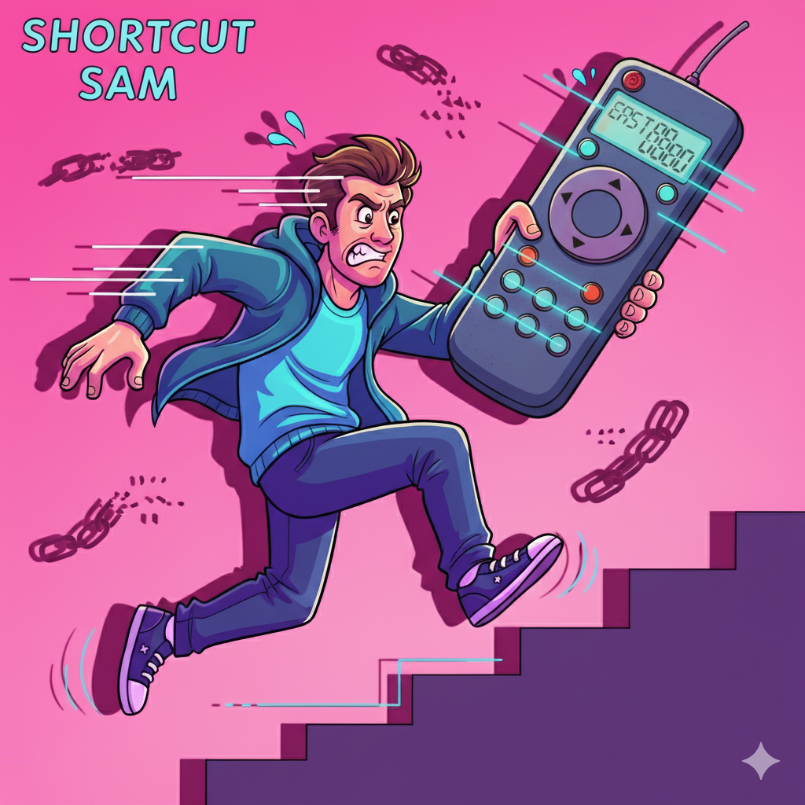
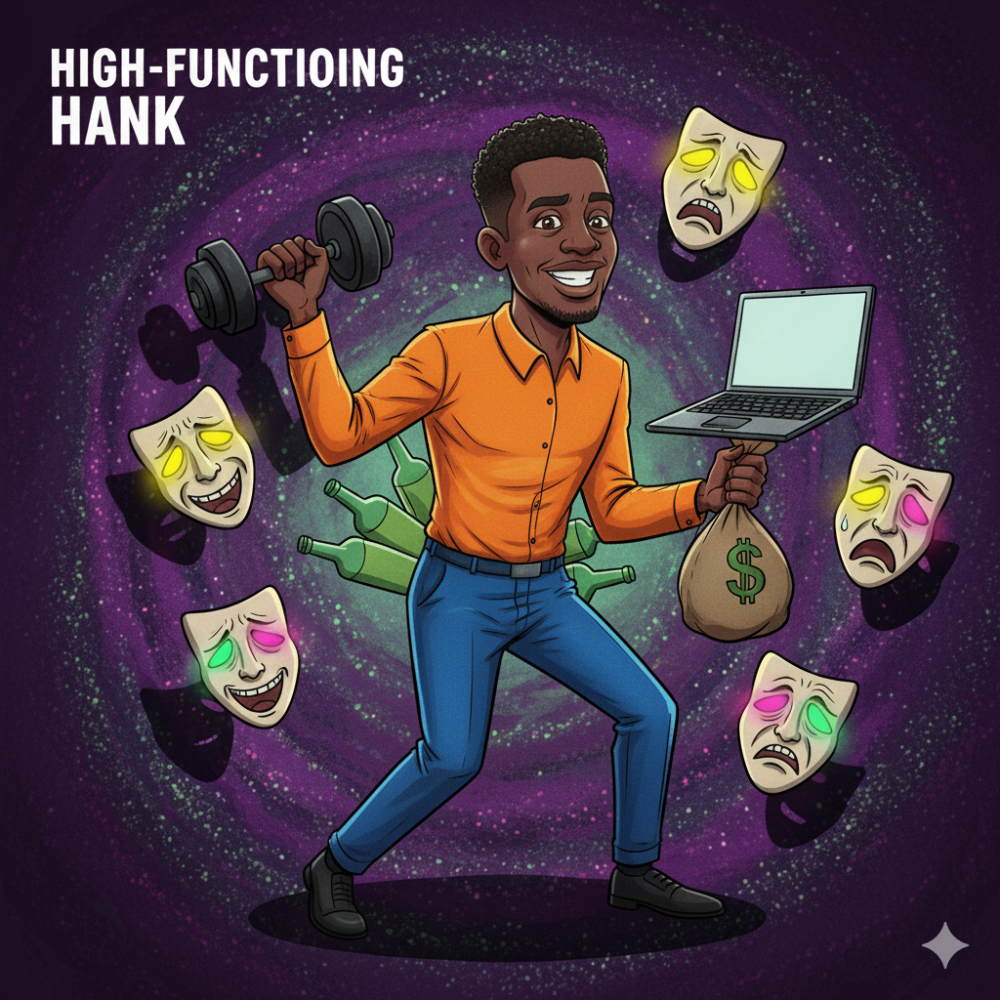
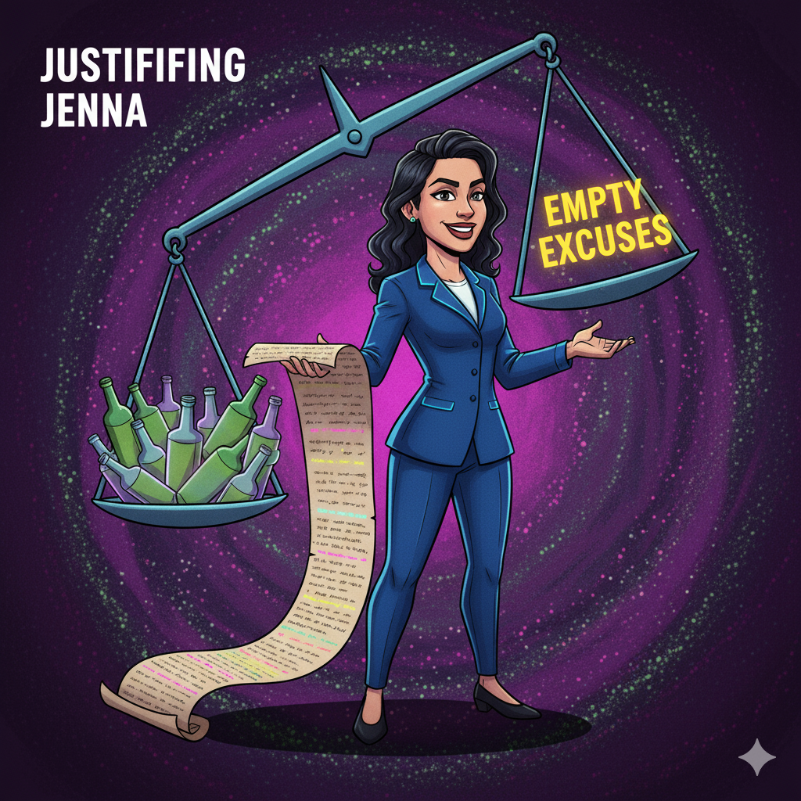
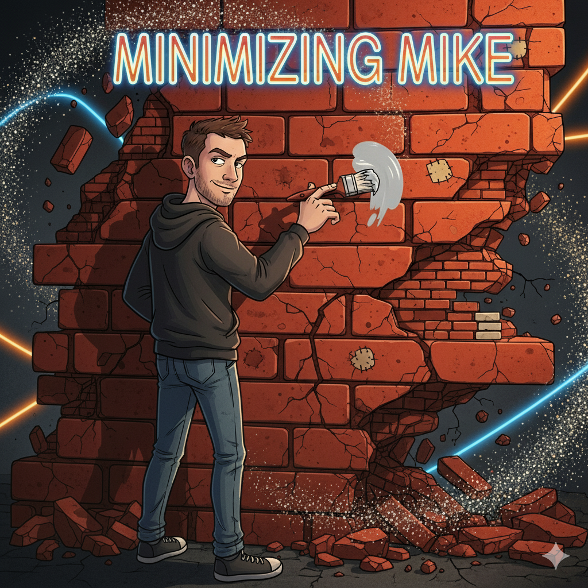
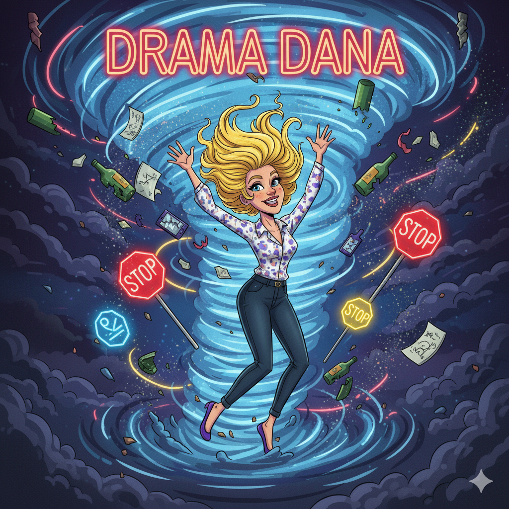
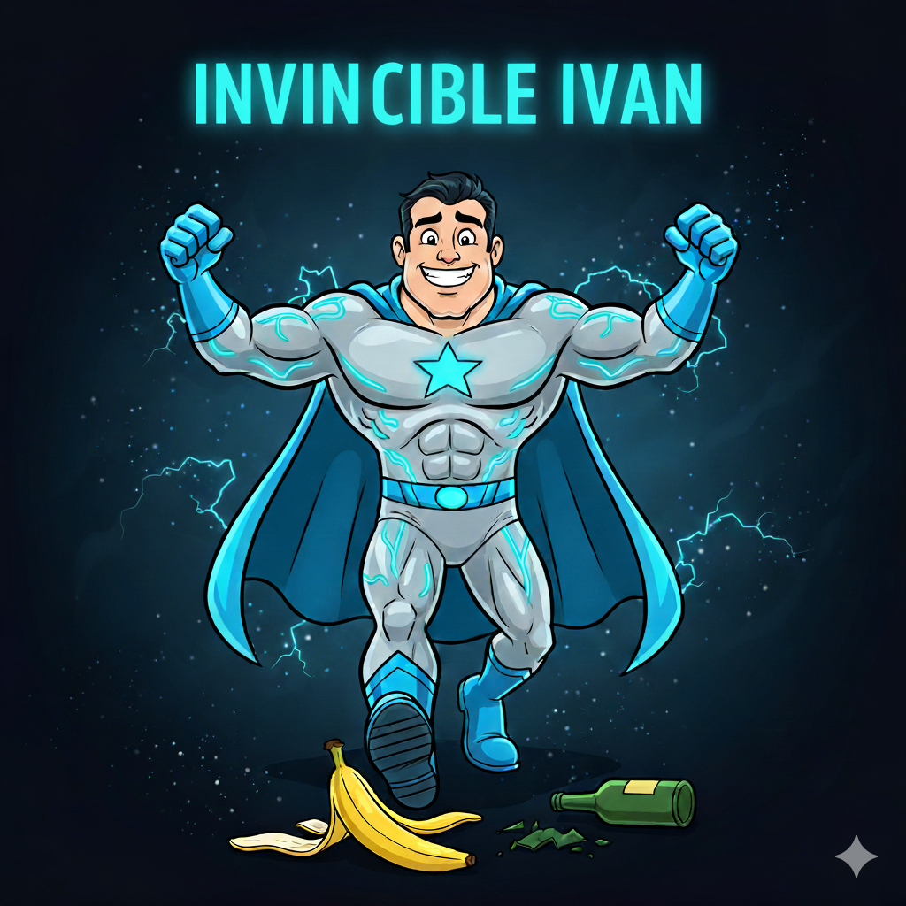
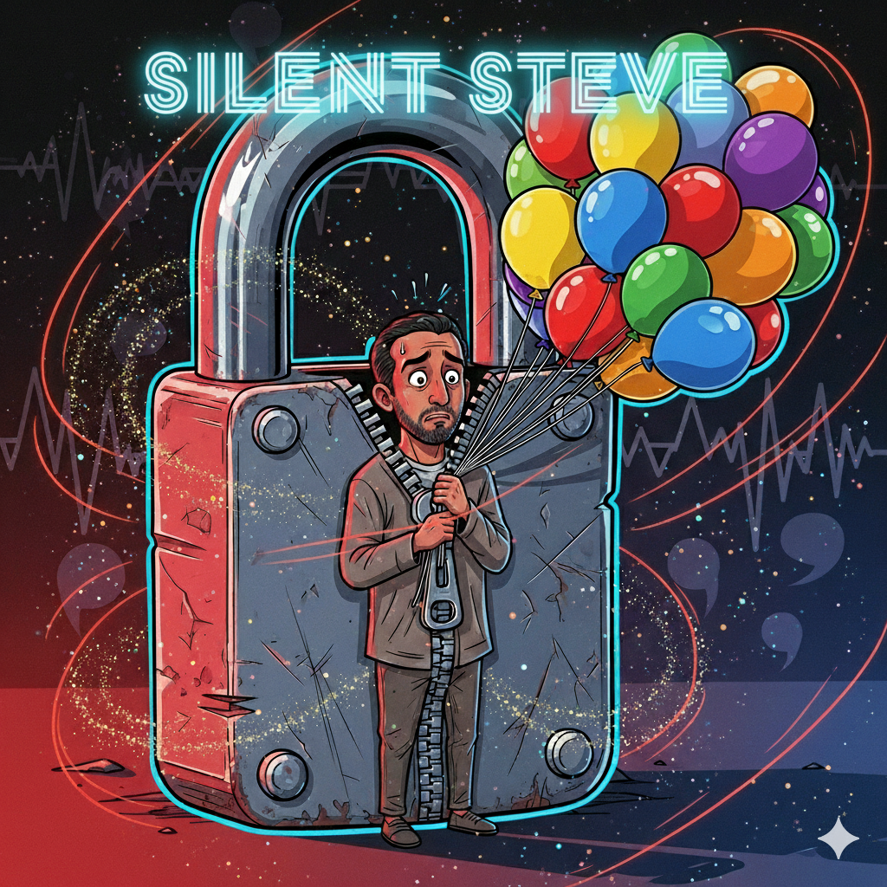
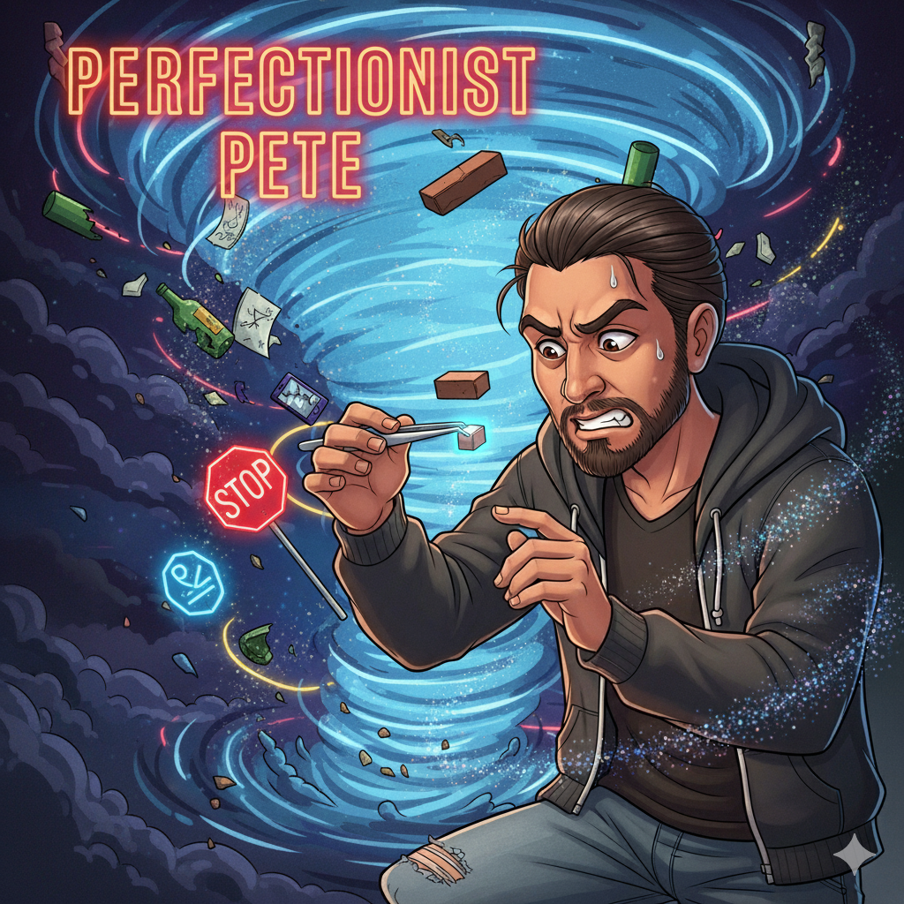

🚀 Shortcut Sam
Rushing recovery
Illusion
“Why drag this out? If I just work harder, I should be better by next week. Other people might need all those steps, but I’m different. I’ve already lost so much time — I need to catch up fast.”
Reality Check
Recovery isn’t a sprint; it is a gradual rewiring. Skipping stages sets up disappointment and relapse when reality cannot match accelerated expectations.
Magical thinking All-or-nothing thinking Unrealistic expectations
Insight
Think strength training for your brain: small, consistent reps build lasting change. Habit formation and neuroplasticity need time, structure, and repetition. Use micro-goals, daily routines, and celebrate consistency over intensity.
Discussion Prompts
- Where in your recovery do you feel most impatient? What cost has rushing had in the past?
- If you slowed down 10%, what skill would you actually gain this month?
- What is a tiny daily action you can repeat for 30 days?
💊 Detox Debbie
Detox = cure
Illusion
“I already did the hard part in detox. I sweated, puked, and suffered through the worst. Now I’m clean — I don’t see why I need all this other stuff.”
Reality Check
Detox clears the body, not the triggers or learning. Without new coping, old stressors will pull you back. Aftercare and skills training reduce relapse risk.
Minimization False equivalence Short-term focus
Insight
Treat detox as the reset button, not the finish line. Build a relapse-prevention plan: triggers, HALT checks, 3 daily coping skills, and a support contact tree. Pair psychoeducation with practice reps.
Discussion Prompts
- What tool have you learned after detox that detox alone could never teach?
- If you left today with only three skills, which ones would protect you most?
- What would “aftercare” look like for the next 30–90 days?

🏋️ High-Functioning Hank
Denial via performance
Illusion
“I’ve still got my job, my house, my workouts. People worse off than me are the real addicts. I’m in control.”
Reality Check
Success in one lane does not cancel harm in another. Addiction can hide under a “functioning” mask until cracks appear; delay increases cost.
Downward comparison Denial through performance Selective attention
Insight
Functioning ≠ freedom. Track objective costs (sleep, mood, conflicts, cravings). Share with a peer/sponsor weekly. Early honesty prevents a harder crash later.
Discussion Prompts
- How has success in one area made it harder to admit struggle in another?
- What early warning signs do you tend to ignore because you “look fine”?
- Whom could you tell the unfiltered truth to this week?

🎭 Justifying Jenna
Excuses over honesty
Illusion
“It wasn’t that bad — I only drank on weekends. I had a reason every time I used. If you lived my life, you’d understand.”
Reality Check
Excuses reduce guilt but do not change outcomes. Defending behavior delays relief; responsibility opens options.
Rationalization Externalization Special pleading
Insight
Swap defense for description: “What happened, what it cost, what I choose next.” Use MI: align actions with chosen values. Practice a 60-second accountability script.
Discussion Prompts
- What’s an excuse that sounded good then but collapsed later?
- How can you describe the behavior without defending it?
- Which value do you want your next choice to honor?

🕶️ Minimizing Mike
“It’s not that bad”
Illusion
“Sure, I used, but it wasn’t every day. I never got arrested like some people. At least I didn’t lose my family.”
Reality Check
Comparing down shrinks urgency but not harm. Small, repeated costs accumulate into big losses.
Minimization Comparison thinking Normalization
Insight
Run a 4-quadrant reality check: health, relationships, work/legal, self-respect. List micro-costs. If it matters to you, it matters.
Discussion Prompts
- Where do you hear yourself saying “it’s not that bad”?
- Which “small” cost grew bigger over time?
- What would an honest weekly check-in include?

🌀 Drama Dana
Chaos chaser
Illusion
“Life is boring when it’s calm. I’d rather have chaos than sit with silence. Drama keeps me alive.”
Reality Check
Chaos spikes adrenaline/dopamine but drains resilience and distracts from healing. Calm initially feels unfamiliar, not empty.
Emotional reasoning Novelty seeking Sensory under-stimulation
Insight
Retrain your baseline: short doses of calm (2–5 min breath work, sensory grounding, values-based activity). Schedule “healthy novelty” (new route, hobby, connection).
Discussion Prompts
- When has calm felt uncomfortable? Why?
- What is a healthy way to get novelty this week?
- What 5-minute regulation practice could you stack onto an existing habit?

👑 Invincible Ivan
Overconfidence
Illusion
“Relapse? Not me. I’m too strong for that. Other people fall off, but I’m solid.”
Reality Check
Believing you are immune blinds you to risk. Everyone has triggers; humility keeps you scanning and prepared.
Optimism bias Overconfidence Illusion of control
Insight
Adopt a “pilot’s checklist”: triggers, coping, supports, exit plans. Rehearse 3 high-risk scenarios. Strength = preparation, not bravado.
Discussion Prompts
- Where does overconfidence sneak in for you?
- Which trigger deserves a written exit plan?
- Who can sanity-check your plan this week?

🤐 Silent Steve
Secrets & shame
Illusion
“If I keep my struggles to myself, they’ll go away. No one needs to know what I’m dealing with.”
Reality Check
Silence magnifies burden and feeds shame. Isolation is a risk factor for relapse; connection predicts recovery.
Avoidance Thought suppression Shame spiral
Insight
Use “name—aim—share”: name the feeling, aim at the need, share with one safe person. Practice scripted shares to lower anxiety.
Discussion Prompts
- What’s something that got heavier when you kept it secret?
- Who is safe to tell one honest thing to this week?
- What 2-sentence script could you use to start that convo?
🔄 Relapse Ryan
“Tomorrow” loop
Illusion
“I’ll stop after this one last time. I’ll quit tomorrow. I’ll start for real when I’m ready.”
Reality Check
“Later” often becomes “never.” The brain overestimates future willpower and underestimates today’s harm.
Procrastination Future discounting Present bias
Insight
Shrink the start: commit to a 2-minute action now (text support, pour out supply, schedule group). Momentum beats motivation.
Discussion Prompts
- What have you promised “tomorrow” more than once?
- What 2-minute action can you take before bed tonight?
- Who will you report your action to for accountability?
🧯 Crisis Chris
Only acts at disaster
Illusion
“I don’t really need recovery unless things get really bad. I can handle the small stuff on my own.”
Reality Check
Waiting for disaster increases damage and effort needed. Small drifts turn into big detours without maintenance.
Catastrophic threshold thinking Minimization Short-termism
Insight
Build a simple daily/weekly routine: sleep, movement, connection, coping practice, gratitude. Spot “yellow flags” and act while they are small.
Discussion Prompts
- What are your first yellow flags before a crash?
- What does “maintenance” look like on an average Tuesday?
- Which one habit will you protect even on bad days?
🧛 Numbing Nina
Feels = threat
Illusion
“If I don’t feel it, it can’t hurt me. Better to stay numb than get overwhelmed.”
Reality Check
Pushed-down feelings leak out as anxiety, irritability, or relapse triggers. Emotions are data, not dangers.
Emotional avoidance Catastrophizing about emotions Experiential avoidance
Insight
Use the 90-second wave: name the feeling, breathe (4-6 cadence), ground with 5-senses, then choose a value-based action. Distress tolerance buys time for wise mind.
Discussion Prompts
- Which emotion do you numb most? What is it trying to tell you?
- What grounding skill works fastest for you?
- Who helps you feel without fixing you?

🎯 Perfectionist Pete
All-or-nothing
Illusion
“If I can’t do recovery perfectly, it’s not worth doing. One slip means I’m a failure.”
Reality Check
Recovery is iterative and messy. A slip is information, not identity. Perfectionism fuels shame and avoidance.
Black-and-white thinking Overgeneralization Labeling
Insight
Adopt “good enough” targets, debrief slips with curiosity (ABC: antecedent–behavior–consequence), and practice self-compassion phrases to sustain effort.
Discussion Prompts
- Where has perfectionism stalled your progress?
- How would you debrief a slip without shame?
- What does a “B+ day” look like in recovery?
🕰️ Tomorrow Tina
Waiting for perfect timing
Illusion
“I’ll start when the time is right — when I feel stronger, calmer, or more ready.”
Reality Check
The perfect time never arrives. Readiness often follows action; small starts reduce anxiety and build self-efficacy.
Temporal distortion Emotional reasoning Present bias
Insight
Use a 3-minute rule: start for 3 minutes and reassess. Bundle with a cue (after coffee, take a 5-minute walk; after lunch, text support).
Discussion Prompts
- What have you delayed while waiting to “feel ready”?
- What is your 3-minute starter today?
- Which cue can you pair it with so you don’t forget?
🧟 Nostalgic Nick
Selective memory
Illusion
“Remember the good times? Those nights were wild, fun, and worth it. That’s what I miss.”
Reality Check
Addiction edits the highlight reel, hiding the consequences. Honest memory requires playing the whole tape until the real ending.
Selective memory Rosy retrospection Confirmation bias
Insight
Create a two-column memory: “the high” vs “the aftermath.” Add photos, texts, bills to ground it. Rehearse a grounding phrase when nostalgia hits.
Discussion Prompts
- Which “good memory” looks different when you play the full tape?
- What evidence helps you remember the cost?
- What phrase will you use when nostalgia knocks?
🪞 Comparison Carrie
Comparing down
Illusion
“Other people lost everything. Compared to them, I’m fine. Why should I change if they’re worse?”
Reality Check
Comparing down lowers urgency but not risk. Your goals are about your values, not someone else’s rock bottom.
Downward comparison Whataboutism Minimization
Insight
Switch to upward/inspiration comparisons. Define 3 value-aligned goals and track your own metrics. Recovery is personal, not relative.
Discussion Prompts
- Who do you compare to that keeps you stuck?
- Who inspires you forward — and why?
- What are your top 3 value-based goals for the next 30 days?